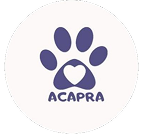

Siga nossos passos pelas redes sociais!
Siga nossos passos pelas redes sociais!
Use o QR Code acima para doar qualquer valor. Sua ajuda mantém consultas e cirurgias, compra ração, vermífugos e custeia resgates.
Precisamos de apoio em feiras de adoção, transporte a clínicas, visitas pós-adoção e criação de conteúdo.
Abra sua casa por alguns dias até encontrarmos um lar definitivo. Nós orientamos e ajudamos com insumos.
Ração (cães e gatos), tapetes higiênicos, patês, caminhas, caixas de transporte, medicamentos e produtos de limpeza são sempre bem-vindos.
Contribua mensalmente com os custos de um resgatado até ele ser adotado. Você acompanha a evolução de perto.
Divulgar nossos posts e animais disponíveis nas redes sociais aumenta muito as chances de adoção.
Consultas, exames, cirurgias, internações e castrações de cães e gatos resgatados.
Ração, patês, suplementos, vermífugos, antipulgas, caminhas e itens de conforto.
Transporte até clínicas, lares temporários e eventos, além de materiais para feiras de adoção.
Tem dúvidas, quer se voluntariar ou doar itens? Chame a gente.